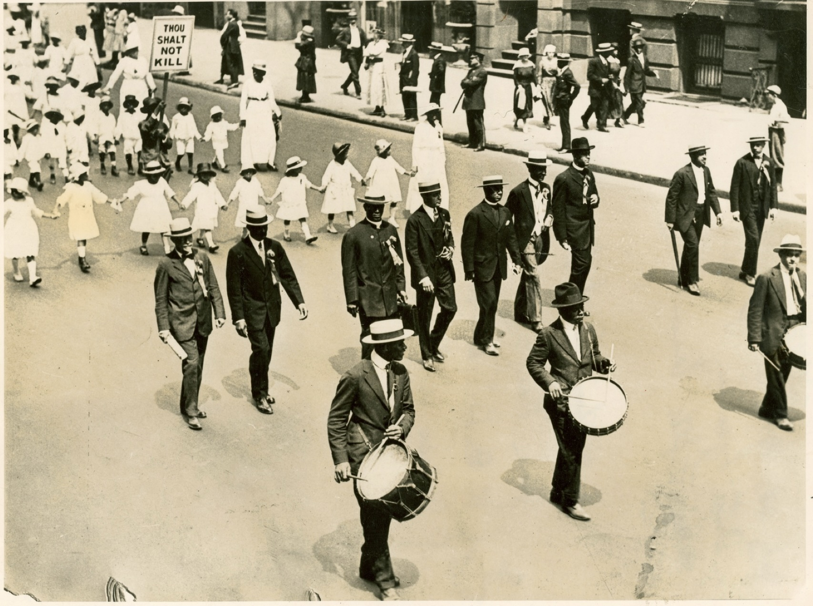

About
 This anthology is an ongoing effort to make available a selection of works by W.E.B. Du Bois that appeared in The Crisis, the official journal of the NAACP. Du Bois founded the journal in 1910 and regularly contributed editorials and occasional articles between 1910 and 1934 when he left the NAACP over conflicting views on segregated institutions.
This anthology is an ongoing effort to make available a selection of works by W.E.B. Du Bois that appeared in The Crisis, the official journal of the NAACP. Du Bois founded the journal in 1910 and regularly contributed editorials and occasional articles between 1910 and 1934 when he left the NAACP over conflicting views on segregated institutions.
In addition to his many other commitments during this period, his writing for The Crisis was prolific, frequently writing multiple items for each of the 286 issues he edited. The content of his pieces varied widely, from short items recognizing developments at Black colleges or Y.W.C.A chapters, to fiery denunciations of Southern Jim Crow laws, to long essays on the relationship between capitalism and racism. This volume attempts to represent the full diversity of his writing during this period, particularly those pieces that engage in analysis.
Although he published his own articles every year or so, Du Bois’s main contribution to the writing of The Crisis was his editorials. Early editorials in The Crisis are unsigned, although historians and biographers attribute most to Du Bois, except those appearing under the name of another NAACP official or when it was noted in the pages that Du Bois was traveling during the production of the issues. These usually appeared near the back, after an “Opinion” section composed of extracts from Black newspapers. In 1921, The Crisis switched from publishing “Editorials” to an “Opinion” column credit to Du Bois, and it was usually the first section in each issue. Finally, in the late 1920s, his section was renamed “Postscript” and moved to the back pages.
As one of the major goals of the journal was to document white racism, Du Bois did not shy away from printing offensive language and images of racial violence that were designed to shock and disgust readers. They remain shocking and disgusting 100 years on.
 The title of this volume, Dare Your Fight?, comes from a 1914 editorial Join or Die, which provides a rationale for the journal and an emotional plea to support it and the NAACP:
The Crisis entertains and informs its readers for the one object and the sole object of arousing their fighting blood. The Crisis means fight and fight for Right.
The entire run of The Crisis is available at the Internet Archive. We review each issue to identify relevant pieces, and then copy, clean and format the text to match the version found in the PDF. Each cleaned article is saved in markdown format and is available on the project’s GitHub site. Please consider making more articles available by contributing your effort to the project.
The versions of his work published here largely reflect how they appeared when originally published. For example, the hyphen in “to-day” is reproduced. Only a few consistent changes have been made:
- Paragraph-long quotes are indented.
- While early articles began with a drop cap, and the first few words were capitalized in many pieces, those have not been reproduced here.
- A few typographical conventions have been modernized, such as placing punctuation within the quotation,
- One or two spelling errors are corrected.
Finally, while this project emphasizes the writing of W.E.B. Du Bois, The Crisis was much bigger than that. There are politics, community updates, lists of college graduates, poetry, fiction, and art. Where else will you stumble across Langston Hughes coming in second in a reader-submitted poetry contest? Every author’s name provides an opportunity to go down a rabbit hole exploring a new facet of early twentieth-century Black culture. But Du Bois must have realized that what his readers wanted most was baby pictures. Adorable grins appear in just about every issue. There is likely no larger archive of African American infant portraiture than the pages of The Crisis.
The website is produced using Quarto.
Neal Caren